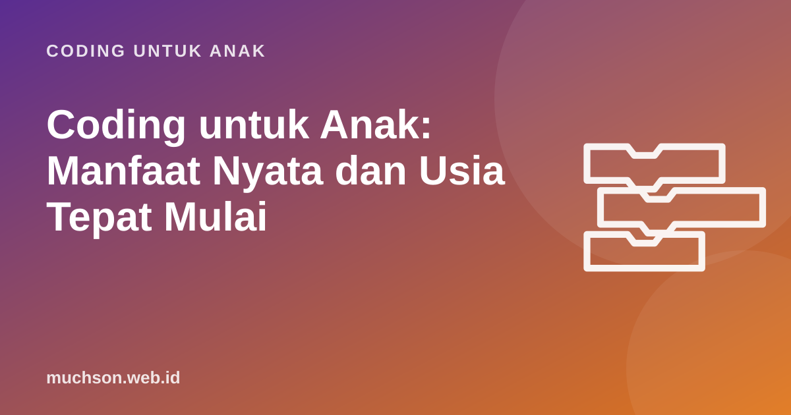

Beranda › Artikel › Coding untuk Anak
Coding untuk AnakCoding untuk Anak: Manfaat Nyata dan Usia Tepat Mulai
Banyak orang tua mendengar bahwa anak "harus belajar coding", lalu bingung: apakah anak saya terlalu kecil, apakah ia harus jago matematika, dan apa sebenarnya yang didapat? Artikel ini menjawabnya dengan jujur, berdasarkan riset, dan diakhiri tes singkat untuk menentukan titik mulai yang cocok bagi anak Anda.

Coding untuk anak itu sebenarnya apa?
Coding adalah menulis perintah yang dijalankan komputer. Untuk anak usia SD, perintah itu hampir tidak pernah berupa baris teks rumit seperti di film. Anak menyusun blok bergambar yang saling mengunci seperti puzzle: "ketika bendera hijau diklik", "gerak 10 langkah", "ulangi 4 kali". Hasilnya bisa dilihat langsung: kucing berjalan, roket terbang, skor bertambah.
Analogi yang paling membantu: coding mirip menulis. Kita mengajari anak menulis bukan supaya semuanya menjadi wartawan, tetapi supaya mereka bisa menyusun pikiran dan mengungkapkan ide. Coding melakukan hal yang sama untuk dunia digital. Anak berpindah dari sekadar memakai aplikasi menjadi membuat sesuatu dengan komputer.
Tujuan coding untuk anak usia 7 sampai 11 tahun bukan menjadi programmer. Tujuannya melatih cara berpikir runtut, berani mencoba, dan mencipta. Kalau kelak ia menjadi programmer, itu bonus.
Manfaat yang didukung riset (dan yang dilebih-lebihkan)
Jeannette Wing, ilmuwan komputer dari Carnegie Mellon, mempopulerkan istilah computational thinking atau berpikir komputasional pada 2006. Ia berpendapat cara berpikir ini sama pentingnya dengan membaca, menulis, dan berhitung: memecah masalah besar, mengenali pola, mengabaikan detail yang tidak penting, lalu menyusun langkah penyelesaian. Coding adalah salah satu cara paling konkret untuk melatihnya, karena komputer langsung menunjukkan apakah langkah kita benar.
Bukti terbaik sejauh ini datang dari meta-analisis Scherer, Siddiq, dan Sánchez Viveros (2019) di Journal of Educational Psychology, yang merangkum 105 penelitian. Hasilnya: anak dan remaja yang belajar pemrograman tidak hanya lebih baik dalam pemrograman, tetapi juga menunjukkan peningkatan berukuran sedang pada kemampuan lain seperti berpikir kreatif, matematika, metakognisi (kesadaran tentang cara berpikir sendiri), dan penalaran. Efek terbesar tetap pada kemampuan yang dekat dengan coding itu sendiri.
| Manfaat | Seberapa kuat buktinya | Seperti apa di rumah |
|---|---|---|
| Memecah masalah menjadi langkah kecil | Kuat, inti dari berpikir komputasional | Anak bisa menjelaskan "pertama ..., lalu ..., kalau ... maka ..." |
| Ketekunan saat gagal | Sedang, terlihat konsisten di kelas yang membiasakan debugging | Anak tidak langsung menyerah saat programnya salah |
| Kreativitas dan ekspresi | Sedang, terutama di lingkungan proyek terbuka seperti Scratch | Anak membuat cerita, kartu ucapan, atau game versinya sendiri |
| Nilai matematika naik | Ada, tetapi efeknya lebih kecil dan bergantung cara mengajar | Paham koordinat, sudut, dan bilangan negatif lewat gerakan sprite |
| "Anak jadi jenius" | Tidak ada bukti | Hati-hati dengan janji berlebihan di iklan kursus |
Perhatikan baris terakhir. Riset yang sama juga menunjukkan hasilnya sangat bergantung pada cara mengajar. Anak yang hanya menyalin kode dari video tanpa memahami kenapa, mendapat manfaat jauh lebih sedikit dibanding anak yang diajak merancang, mencoba, salah, lalu memperbaiki.
Usia berapa sebaiknya mulai?
Tidak ada usia ajaib. Yang menentukan adalah kesiapan anak dan bentuk kegiatannya. Panduan berikut disusun dari rentang usia yang dipakai pembuat alat-alatnya sendiri: ScratchJr dirancang MIT dan Tufts University untuk anak 5 sampai 7 tahun, sedangkan Scratch umumnya dipakai anak 8 tahun ke atas.
Tiga tanda praktis bahwa anak siap memakai Scratch: ia sudah lancar membaca kalimat pendek (blok Scratch berisi teks), bisa memakai mouse atau touchpad untuk menyeret, dan bisa fokus sekitar 20 sampai 30 menit pada satu kegiatan. Anak 7 tahun yang memenuhi ketiganya bisa mulai dengan didampingi. Anak 10 tahun yang belum lancar membaca lebih baik memulai dari permainan tanpa layar dulu.
Mitos yang sering membuat orang tua ragu
Cara memulai di rumah: rencana dua minggu
Anda tidak perlu langsung membeli kursus. Coba rencana ringan ini untuk melihat apakah anak tertarik. Kuncinya: sesi pendek, selesai dengan rasa berhasil, dan anak yang memegang mouse.
- Sesi 1 (tanpa layar, 20 menit). Main "robot manusia": anak memberi perintah maju, belok kiri, belok kanan untuk membawa Anda ke dapur. Kalau Anda menabrak kursi, itu bug. Tertawakan bersama, lalu perbaiki perintahnya.
- Sesi 2 (30 menit). Coba latihan Robo di bawah atau di situs Scratch: buat sprite berjalan dan berkata "Halo".
- Sesi 3 (30 menit). Kenalkan blok ulangi. Tanyakan: "Bisakah programnya dibuat lebih pendek?"
- Sesi 4 (45 menit). Proyek bebas: kartu ucapan ulang tahun untuk saudara. Biarkan anak memilih latar dan tokohnya.
- Penutup. Minta anak memamerkan karyanya ke anggota keluarga lain. Menjelaskan karya sendiri adalah bagian penting dari belajar.
Kalau anak minta "satu level lagi", itu tanda bagus. Kalau ia bosan setelah 10 menit, coba format lain (cerita, game, kartu ucapan) sebelum menyimpulkan ia tidak suka coding.
Kapan perlu kelas atau kursus?
Belajar mandiri dari tutorial video cocok untuk eksplorasi awal. Masalahnya, setelah beberapa minggu banyak anak berhenti di tahap "menyalin": mereka bisa mengikuti video, tetapi bingung saat diminta membuat ide sendiri. Di titik ini kurikulum yang berurutan (setiap konsep dibangun di atas konsep sebelumnya), latihan bertahap, dan umpan balik dari guru membuat perbedaan besar.
Sebagai gambaran, di PixelKode, kelas yang saya kembangkan untuk anak 8 sampai 11 tahun, setiap pelajaran mengikuti pola yang sama: materi singkat bergambar, latihan Robo untuk melatih logika, proyek di Studio yang blok-bloknya sama dengan Scratch, lalu kuis kilat. Pola seperti ini, apa pun kursus yang Anda pilih, adalah yang perlu dicari: ada latihan logika, ada proyek kreatif, dan ada pemeriksaan hasil.
Tanya jawab
Usia berapa anak bisa mulai belajar coding?
Apakah coding membuat anak pintar matematika?
Berapa lama anak sebaiknya belajar coding per minggu?
Apakah anak perempuan juga cocok belajar coding?
Perlu laptop khusus?
Sumber dan bacaan lanjut
- Wing, J. M. (2006). Computational Thinking. Communications of the ACM
- Scherer, Siddiq, & Sánchez Viveros (2019). The cognitive benefits of learning computer programming: A meta-analysis of transfer effects
- ScratchJr, MIT Media Lab dan Tufts University (usia 5-7 tahun)
- Scratch untuk orang tua (situs resmi)
- Lifelong Kindergarten Group, MIT Media Lab